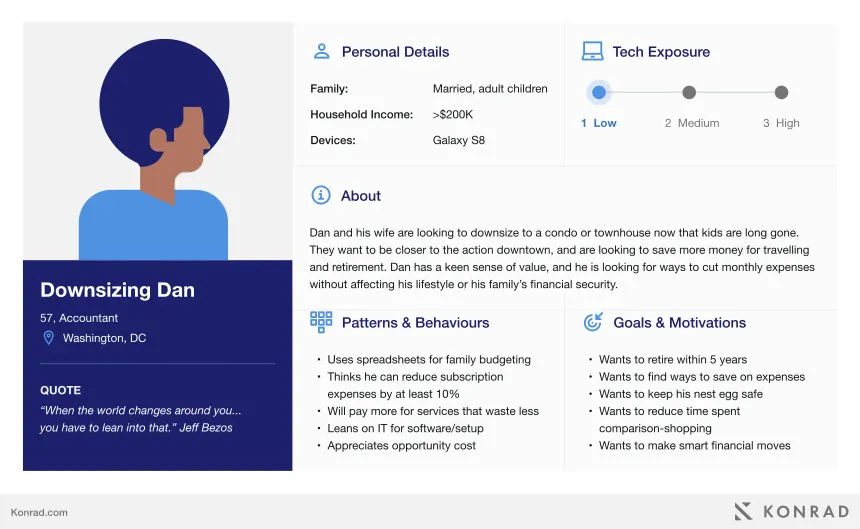
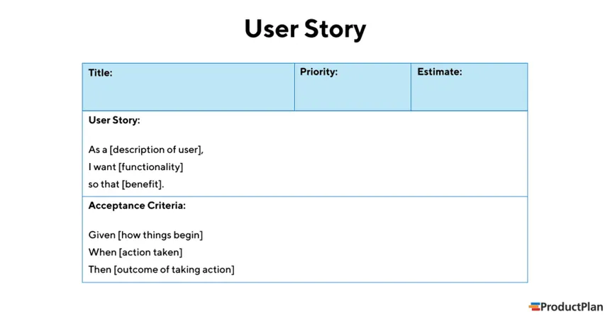

Persona & User Story
Persona
What is a Persona?
A persona is a fictional character that represents a typical user. It helps teams understand user needs, behaviors, motivations, and goals.

Why use Personas?
- Create a shared understanding of the target users.
- Help prioritize features and design decisions.
- Keep the team focused on user goals and perspectives.
- Increase empathy within the team toward real users.
Key Characteristics:
- Fictional, yet realistic and based on research.
- Include demographics, behaviors, motivations, and pain points.
- Serve as reference points throughout the design process.
Limitations:
- Only as good as the data they're based on.
- Overgeneralization may lead to stereotypes.
- Must be regularly updated to remain relevant.
User Story
What is a User Story?
A user story is a short, simple description of a feature told from the perspective of the person who desires the new capability. It typically follows this format:

“As a [type of user], I want [some goal] so that [some reason].”
Why use User Stories?
- Clearly express user needs and expectations.
- Encourage collaboration between business and technical teams.
- Help prioritize tasks in agile development environments.
Characteristics of a Good User Story (INVEST):
- Independent – can be developed separately.
- Negotiable – not a fixed contract; open for discussion.
- Valuable – delivers value to the user.
- Estimable – can be estimated for planning.
- Small – sized to fit into a single sprint.
- Testable – clear criteria to determine if it's complete.
Example:
“As a user, I want to save my favorite products so I can easily find them later.”